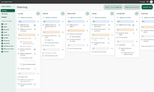
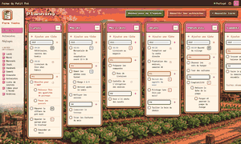

Une seule fois sur cet appareil. Le compte est donné par la ferme.
Départ rapide : Comme les jours · Aucun encart
Prénom, initiale de la pastille et couleur.
Le modèle des listes Lundi à Dimanche : le changer change tous les jours. Les autres listes ont leurs propres encarts (menu « ⋯ » de la liste).
Chacun règle le sien. À l'heure dite, une notification montre la liste du jour ; tant que « J'ai lu ma liste » n'est pas touché, elle revient.
Rempli dans tous les cas, chronomètre allumé ou non. Gardé sans limite de durée.
Ce choix ne vaut que pour cet appareil. Les autres gardent le leur.


Toutes les listes en entier, sur papier ou en PDF, même sans réseau.
Tout · Les sept jours · Aucune
Sur iPhone, si la fenêtre d'impression ne s'ouvre pas : ouvrir le site dans Safari, toucher « Imprimer » ici, puis Partager → Imprimer.